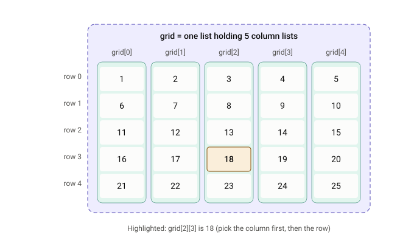

Lists Exercises
1 Creating/Filling lists
1.1 List of ints
Make a list holding numbers 1 to 100 using a for-loop, then print the contents of the list using a single print() statement.
Whenever you need to create a list, declare it as an empty list first and then add to it after.
my_list = []1.2 List of floats
Make a list holding numbers 1.0 to 10.0 in increments of 0.1 using a for-loop, then print the contents of the list using a single print() statement.
Unfortunately you cannot use a float value for the step on a for loop :-P, so think of other ways to generate numbers that increase by a specfic amount.
Note, some of the values that are generated will look weird - this is just what happens with float values on computers which are not exactly precise. You can basically ignore this, but keep in mind that if you try checking if 2 float values are “equal” to each other, then sometimes they may not be exactly equal.
Try enabling the line that rounds the number to see how it can be corrected.
1.3 List of floats using numpy
The NumPy library is used for more advanced math and one of the many things it provides is a function “linspace” can be used to generate a set of numbers evenly (linearly) spread across an interval.
NumPy uses what it calls arrays which are very similar to lists, and you can convert an array back to a list using a .tolist() function.
Make a list holding numbers 1.0 to 10.0 in increments of 0.1 using numpy’s linspace function, then print the contents of the list using a single print() statement.
1.4 Duplicate a list (manually)
Make a second list called copied and fill it with the same numbers as my_list using a for loop.
1.5 Evaluate a formula on a set of values
Given some function f and a list of x values, generate a list of f(x) values.
1.6 Evaluate a formula on a set of values using numpy
Given some function f and a list of x values, generate a list of f(x) values.
2 List size/length
2.1 Print the number of items in a list
3 List Indexing
3.1 Print first item of a list
3.2 Print 3rd item of a list
3.3 Print last item of a list
3.4 Print 2nd-to-last item of a list
3.5 Change 2nd item in list
Modify the 2nd item in the list to have the value “blue”, then print the list.
3.6 Changing a value
What will happen if you run this code?
colours = ["red", "green", "blue", "yellow"]
colours[4] = "orange"You’ll get an error because the list doesn’t have an item at index 4 (which would be the 5th item in the list)
3.7 Make every even-indexed item in a list become zero
For example, a list:
[5, 6, 56, 43, 56, 32, 32, 4, 8]
should turn into:
[0, 6, 0, 43, 0, 32, 0, 4, 0]
Print the list to see if your code works.
3.8 Increase every odd value in the list to become an even number
For example, a list:
[5, 6, 56, 43, 56, 32, 32, 4, 8]
should turn into:
[6, 6, 56, 44, 56, 32, 32, 4, 8]
Print the list to see if your code works.
3.9 Count how many items in the list are larger than the previous item in the list
For example, a list:
[5, 6, 56, 43, 56, 32, 32, 3, 4]
should have a count of 4 because:
- 6 is larger than 5
- 56 is larger than 6
- 56 is larger than 43
- 4 is larger than 3
Something unexpected might happen here. Your count might be one higher than it should be. If that happens, print out a message to show each of the values that you compare with each other.
Use indices to compare list_a[i] with list_a[i - 1]
Use indices to compare list_a[i] with list_a[i + 1]
Instead of indices, save the previous item in a variable to compare against
4 2-Dimensional Lists (list of lists)
4.1 Create a grid/matrix
Make a grid of 10 lists. Fill each of the 10 lists with 10 zeros. You can visualize this as a “list of columns” where for each X value, you’ll have a list of Y values.

You can actually do multiplication on a list like this:
five_zeros = [0] * 5